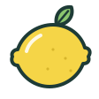

Réglages
Repas à générer
Jours planifiés
lundi → dimanche
14 repas par semaine.
Apparence
AutomatiqueClairSombre
L’app suit le mode clair ou sombre de votre appareil.
Légumes perso · 2
Cèpe
Légumes · sept. à nov. · 1 recette

Yuzu
Fruits · toute l’année · 1 recette
Sauvegarde
Vos recettes restent sur cet appareil. Exportez-les régulièrement pour ne rien perdre.
Dernier export : 21 septembre (il y a 17 jours)
Importer une sauvegardeAjoutez l’app à l’écran d’accueil
Safari efface les données d’un site après 7 jours sans visite. Installée, l’app garde vos recettes et marche sans connexion.
- 1Touchez Partager dans Safari
- 2Choisissez Sur l’écran d’accueil
Ce rappel disparaît une fois l’app installée.
Saisons : ADEME (Impact CO₂) et Agenda des Chefs METRO (Licence Ouverte), mis à jour le 1er octobre 2026. Illustrations dessinées pour l’app.